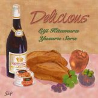
2002.07.16–19 河内スタヂオ録音
Delicious
北村英治 & 世良譲北村英治 (cl) / 世良譲 (p)
「おおっ! これはすごい。いいよー ここ」世良譲さん、スタジオに着いて
About the Album
作品紹介
「Delicious」
耳グルメ納得！ 24年ぶりのデュオ。二人併せて一世紀余りのプロの味
北村英治（ｃｌ）,世良譲(p)
￥３，０００
（CD代、税込み）
購入先はこちら>>> 北村英治HP
1.酒とバラの日々 2.この素晴らしき世界 3.枯葉 4. アイ・ソート・アバウト・ユウ 5. マイ・フーリッシュ・ハート
6. イパネマの娘 7. スター・ダスト 8. ステラ・バイ・スターライト 9. オール・マイ・ライフ 10. ハートエイクス 11. ミスティ
*デザート イフ・アイ・クドゥ・ビィ・ウィズ・ユウ（北村英治 歌）
世良譲と私のデュオのアルバムは、24年ぶりのものです。 「1978年にリリースされたデュオのアルバムをCDにして再発出来ないか」と云う多くのファンの声があり 「それならば現在の二人の新しいレコーディングが面白いのではないか」 と二人の提案で話しが纏まりました。 お互いプロ生活50年以上、二人併せると一世紀を超します。大変なものです。でも二人とも、ちっとも長いなんて感じて居ません。つい昨日プロになった様な気持ちです。ご存知の様に、世良譲は昨年来体調を悪くして、闘病中の身です。少々心配はして居ましたが、療法と彼自身の驚異的な精神力で快方に向かい、このレコーディングが出来る様になりました。気の合う二人ですから、あまり細かい打ち合わせもしないで演奏する事にしました。河内スタヂオは環境は良いし時間的な制約も無いし気楽に出来ると云う事でのんびりとやって見ました。
いざ演奏をして見ると、世良のプレイは本当に見事なもので、私もすっかり乗せられてしまいました。別に何の約束も無しにひたすら演奏をして、自然に出来上がったコンビネーションも結構面白いものがありました。クラリネットとピアノの、ただ二人だけの演奏ですが、スタヂオの中にはあたたかく楽しい空気でいっぱいでした。それを録音エンジニアの河内伸介さんが、音と雰囲気を一緒にしてこのCDに納めて呉れました。
食いしん坊の二人の演奏です。譲と演っていると、いつも「美味しい気持ち」になります。そんな気持ちが皆様に伝わると幸せです。
尚、デザートの「歌声」は他のメニューに免じてお許しください。
北村英治
Recording Report
レコーディングレポート
<
北村英治 ＆ 世良譲
デュオレコーディング
レコーディングレポート7/15～19 2002 その1
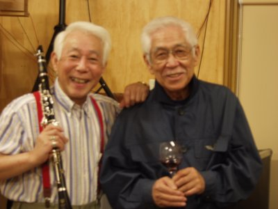
平成14年7月15日
テレビをつけると台風7号のニュースが・・・
河内スタヂオライブの16日午前11頃関東上陸午後東北に・・・と台風のニュースが流れる。結構大きいみたいだ。このまま進むと16日は羽田空港は閉鎖になるだろう。
いてもたってもいられなくなり、事務所に電話。北村さんは、たまたま15日は休みだが、世良さんは島根県出雲市にコンサートでいるらしい。
出雲は台風大丈夫か？そうだ出雲と言えばうちで録音したCD.「 sweet & Lovely」の ｔ
tpの熱田さんがいるではないか。
早速電話してみると台風の影響はまだたいしたことないらしい。東京の事務所に電話して何とか15日に秋田に来てもらえないかと交渉すると、世良さんは島根から羽田に行き北村さんと合流して秋田に来て頂けるとのこと。何とラッキーなことか！胸をなで下ろして15日の最終便で到着の秋田空港にかみさんと迎えに行き,空港で北村さんと世良さんの顔を見てほっとする。
空港を出て、高速を下りて近道の田んぼの中の道路を走る。
だんだん閑散としてくる風景に世良さんの表情が「本当に大丈夫なのかな」と言った顔に変わっているのがわかる。
１時間ほどして河内スタヂオに到着。先ずはスタジオの見学。「おおっ！ これはすごい。いいよー ここ」の世良さんのため息にも似た言葉に、先ほどの心配はふっとんだ。・・・ん！どっかで読んだような・・・。
北村さんが「ここは残響がとってもいいんだ、こっちが調整室さ、いいでしょう、ブースもあってさ」と説明をされていた(^_^)
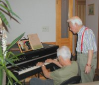
大潟村に着くやいなや, 2階の居間のCPで
打ち合わせを始めちゃうお2人のすごいパワー
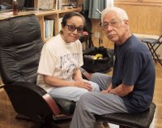
こんなご夫妻になりたいな(^^)
世良さんは私が思ってたより痩せられて少し疲れているように見えた。今重い病気と闘っておられて最近まで入院されていたそうだ。とっても上品な奥様がいつも付き添いサポートされている。
北村さんが「今日のLiveのチェックしようかと世良さんの横に立ち演奏を始めた」
サウンドチェックといっても生音のみ、PA等は使わないので私は最前列のいすに座って聴くことにした。
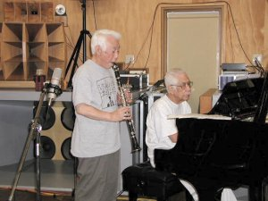
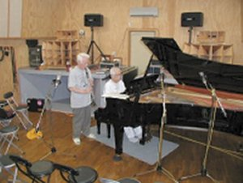
その出てきた音を聴いてぶっ飛んだ！
北村さんの美しい音がスタジオに響き渡り、病み上がりとは思えない世良さんのピアノはまるで二人で弾いてるようなテクニックなのだが、とにかく力が抜けてるというかさらりと弾くフレーズがSwingしているのだ！
病み上がりの心配など吹っ飛んでしまった。、Boston Pianoもセミコンならではのダイナミックなサウンドで鳴ってくれた。
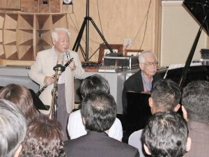
今日ここで聴けるお客さんはめちゃくちゃラッキーじゃないかと思ったが、そのとおりその日は大盛り上がりで聴きに来てくれた方々は大満足でLiveを終えた。
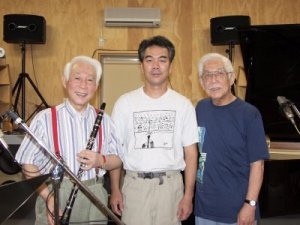
７月１７日
さあ今日からレコーディングだ！早めにスタジオに入り、機材をチェックする。
ミュージシャンが来られる前にこれをしないと安心できないのだ。
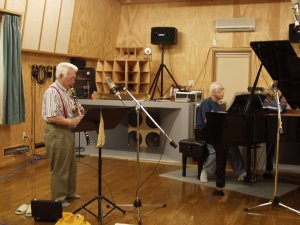
そうしているうちに、北村さんと世良さんが入ってこられた。
少し休んでから１曲目 My Foolish Heart から世良さんのイントロから始まり北村さんがテーマを・・・
う～ん私はなんて幸せなんだろう などと思っているうちに「次はMistyやろうか」ってかんじで順調に録音は進んでいった。
たまに二人で「ちょっと聴いてみようか 」
と言って調整室に入ってこられてプレイに聴き入る。
「音はどうでしょう？」と訪ねると「いーね、ピアノもいいし、いい買い物をしたね」と言ってくださり、去年ジャズピアニストの 河野ミキさんと一緒に大阪まで買いに行ってよかった。
ミキさんありがとう！と心の中でお礼を言った。
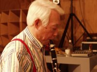
そんなときに出雲の熱田修二さんから電話があり
「どう、うまくいってる？」 「ハイばっちりです」などと話して「じゃあ出雲のおいしいそばを送るからみんなで食べてね」
このそばは、前にも熱田さんからいただいたが、とっても美味しいのだ。楽しみがまた一つ増えた。
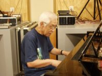
録音はWhat a Wonderful World 、酒バラ、Stella、・・・枯葉 で今日の録音は終わり！
ご苦労様でした。世良さんは少し疲れた感じ、いすに座って目を閉じておられた。演奏しているときは疲れたようには見えなかったが相当集中していたのだろうなと思った。
夜は堤君が買ってくれたばかでっかい岩ガキをレモンを絞って皆んなで食べた。
世良さんの奥様は昔カキを食べて具合が悪くなった経験があり「私はいらないわ 」と言っておられたが、みんながうまいうまいといって食べてたので「じゃ私も」と言って食べて「おいしい！」と感激してくださった。
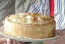
後のメインディッシュはまたまた北村さんの 仔羊とブロッコリーのパイ これはクッキングのページを見ていただければわかるように、すばらしく美味しかった。
お酒も飲んでいい気持ちになると居間に置いてあるYAMAHA のCP（グランドピアノみたいなエレピ）を上機嫌で弾いてくださり最高のパーティとなった。
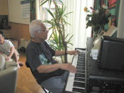
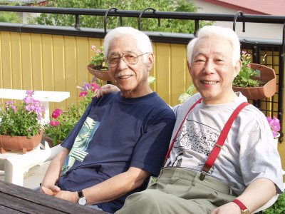
７月１８日
昨日の録音が順調だったので今日は余裕でいけそうだ。
昨日の録音のプレイバックを一人で聴いてると北村さんご一行が調整室に入ってきた。
お茶を飲みながら（北村さんも世良さんもコーヒーなどは飲まないで健康茶をいつも水筒に入れて持ち歩いておられる）とってもリラックスムードでいい感じになったところで「さっ、やろか」で昨日やった枯葉をもう一回やろうと演奏を始める
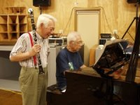
一回でOK！ じゃSoftly as ～、I Thought About You、をいい感じでやってるところに、なんと！熱田修二(tp)さんが奥さんと島根県出雲市からそばを持ってやってきた。
「送るのも何だからもって来ちゃった」とみんなびっくり
「修坊！（世良さんは熱田さんを「修坊」と呼んでるらしい）何でここにいるんや？」と世良さん、同じ島根同士で島根弁になっている。
世良さんは大先輩で熱田さんとは家族同様のつきあいだそうで世良さんもうれしそう！
「今日は北村さんの中華に対抗して私はそばとすしでいきます。」だそうでまた今夜のパーティが楽しみになってきた。
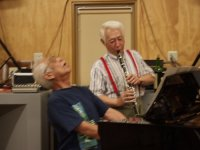
休んだところで、イパネマをやろうとまた演奏開始
世良さんのピアノが楽しそうに響き、思わず北村さんが“イェー”とかけ声いい感じでOK！
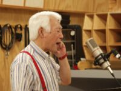
Star Dust、Heart eges 、最後にIf I Could Be With Youでなんと北村さんが歌を歌った（初めて聴いた）
いい声で気持ちよく聴いたところで一発OK！
で今回のレコーディングは終了！お疲れ様、と言おうとしたら世良さんが一人で弾きはじめた。これは逃したら大変とテープを回す、全くすばらしい演奏で終わるとみんなが拍手！
タップダンスをしながら調整室へ
調整室に入ってくるのに世良さんは踊りながら入って来られ,北村さんと握手してから私のところへ来られて「ありがとう」と言って私を抱きしめてくれた。
私がJazzを聴き始めた頃から日本を代表するミュージシャンだった北村さんと世良さんのお二人と仕事ができたことにジーンとなってしまった。
さてその日のパーティーは熱田さんのそばを食べて満足しているところに得意のすしをにぎってくれた、一つ一つの仕事が素人離れしている、そこに北村さんの中華ときた日にゃ最高のパーティーとなりいつも手伝ってくれる河内スタヂオのスタッフ田中君、堤君も大満足のレコーディング終了パーティーだった。
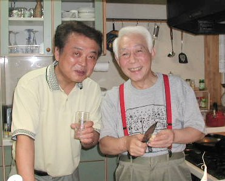
お料理対決
中華の北村 VS. 和食の熱田
レコーディング3日目に 突然 島根からおそばを持ってきてくださった和食の達人熱田さんと 中華の達人北村さんが作った料理の数々を紹介します。
常にキッチンが順番待ち状態でした。
料理を作り終わったら、さあ じゃあ次はボクの番 と次の人が料理に取りかかります。
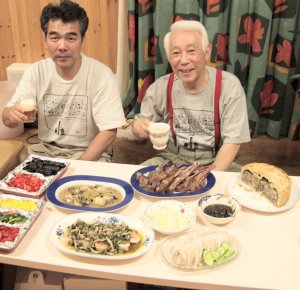
お先にいただきま～す。
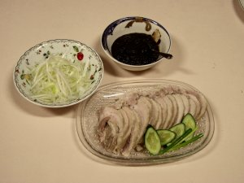
豚バラの水煮
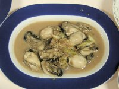
牡蠣の中華風炒め
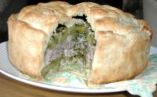
仔羊とブロッコリーのパイ
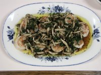
ホタテの貝のオリーブ油焼き
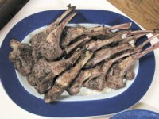
仔羊のグリル
北村英治さんのレシピはこちら
http://eijikitamura.com/cooking.html
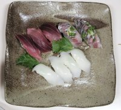
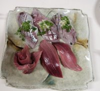
熱田修二さんの握ったお寿司
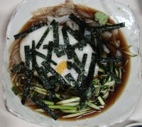
イカの山かけ
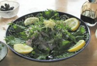
鰺のタタキ
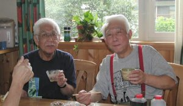
出雲そば うまい！
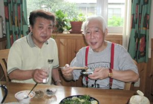
鰺のタタキ 最高！
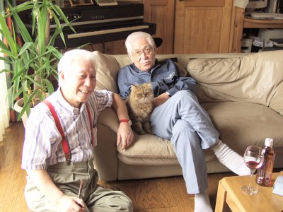
レコーディングが終わって 猫のサリーとくつろぐ 北村さんと世良さん